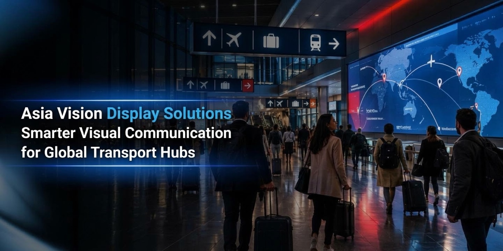
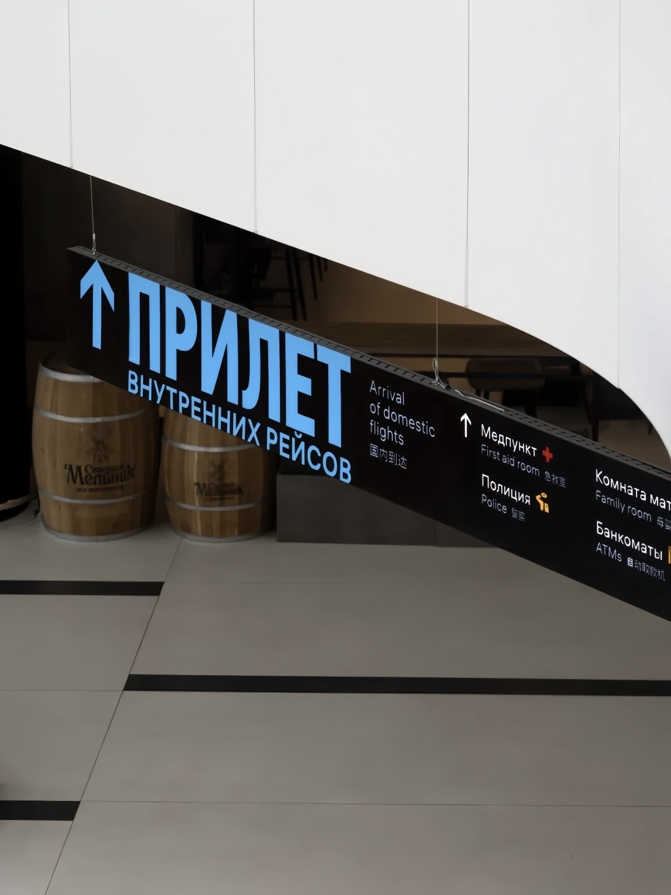

By David
What is LED display airport signage? LED display airport signage is the network of screens that show flight information, wayfinding, boarding status, and advertising across an airport terminal. These displays run continuously under strict reliability and safety rules, so buying differs sharply from ordinary commercial signage. This 2026 guide explains the specifications, redundancy, and certification that airport buyers must demand.
An airport terminal never closes. Screens must run through the night, through peak holiday traffic, and through the maintenance windows that airports schedule in the quiet hours. A failed flight information board does not simply lose advertising revenue, it can strand passengers who cannot find their gate, which is why airport procurement treats display failure as an operational incident rather than a marketing inconvenience.
That operational weight changes the buying decision. Airport buyers care less about the finest pixel pitch than about uptime, readability under bright terminal lighting, and the ability to swap a failed module without closing a passenger corridor. The specification follows the operational need, not the other way around.
LCD video walls dominate some terminal areas, but LED display airport signage wins wherever screens must be large, bright, and seamless. An LED wall has no visible bezel between panels, so a long departure board reads as one continuous surface rather than a grid of separate monitors. That seamless appearance matters for wayfinding, where a broken visual line slows a passenger who is already stressed.
LED also handles ambient light far better than LCD. Terminal concourses are bright, and the glass facades of modern airports push light levels even higher. An LED screen with sufficient brightness stays readable where an LCD panel washes out, and it keeps that readability as it ages, provided the buyer specifies a brightness headroom rather than a value that only holds on the first day.
Start with the function of each screen. A flight information display, a wayfinding panel, a boarding gate sign, and an advertising wall each have different requirements for pixels, brightness, and content refresh. Grouping them under one specification wastes money on the simple screens and starves the demanding ones, so the tender should define each zone separately.
| Terminal Zone | Typical Function | Priority |
|---|---|---|
| Check-in hall | Flight info, queue status | Brightness and wide viewing angle |
| Security and corridors | Wayfinding and directional | Reliability and low maintenance |
| Departure gates | Boarding status and gate info | Fast content update and redundancy |
| Baggage claim | Belt information and advertising | Durability and easy access |
| Retail and duty free | Promotion and brand content | Color accuracy and fine pitch |
| Exterior facade | Branding and public message | High brightness and weather sealing |
For each zone, write the viewing distance and the required brightness into the specification. A screen read from thirty metres needs a coarser pitch and higher brightness than one read from three metres, and buying the finer pitch for the distant screen adds cost without helping the passenger see anything more clearly.
Terminal lighting is often brighter than a typical office, and glass facades can push ambient light far higher. Choose a screen brightness with headroom above the ambient level, and remember that LED output declines over the years. A screen specified at exactly the ambient brightness will look dim long before its service life ends, which is a common and avoidable complaint in airport projects.
| Viewing Distance | Suggested Pitch | Typical Brightness | Best Use |
|---|---|---|---|
| Under 3 metres | P1.2 to P2 | 800 to 1,200 nits | Retail and close wayfinding |
| 3 to 10 metres | P2.5 to P4 | 1,200 to 2,000 nits | Gate and corridor signs |
| 10 to 30 metres | P4 to P6 | 2,000 to 3,500 nits | Check-in and hall boards |
| Over 30 metres | P6 to P10 | 3,500 to 6,000 nits | Exterior facade and large walls |
These ranges are starting points, not rules. A screen behind a glass curtain wall may need exterior-grade brightness even though it sits indoors, because the sun shines through the glass onto the display for part of the day. Always measure the worst-case light condition in the actual terminal before fixing the brightness figure.
Airport buyers should require redundancy in both power and signal. Dual power supplies with automatic changeover keep a screen alive when one unit fails, and dual signal paths keep content flowing when a cable or a sending card fails. The added cost is small next to the operational cost of a dark departure board during peak traffic.
Define the uptime target in the contract and attach a measurement method. A target of ninety-nine point nine percent sounds impressive until the buyer realizes how many minutes of darkness that allows across a year of continuous operation. For flight information screens, the acceptable downtime should be measured in minutes per year, with a service response tied to that figure.
Airport installations fall under strict fire, electrical, and electromagnetic rules. Require fire-rated cabinet materials, low smoke emission where the local code demands it, and EMC test reports that show the screen will not interfere with navigation or radio systems. These documents are not optional extras, they are conditions of installation.
Ask for the certification file early in the tender, not after the order. Some buyers discover too late that a chosen cabinet material lacks the required fire rating for a ceiling void, which forces a redesign at the worst possible moment. Verify the documents before the award, and keep copies in the project file for the authority's inspection.
Airport signage is not a standalone screen, it is the visible end of an information system that connects to flight data, gate changes, and public announcements. The LED network must integrate with that system through a documented interface, and the supplier should demonstrate the integration rather than promise it in a brochure.
Content updates must be fast, because gate changes happen minutes before departure. Test the update latency during commissioning and record it, so a later performance complaint can be measured against an agreed baseline. This discipline mirrors the way a broadcast buyer tests refresh and latency, as covered in the refresh rate guide.
Airport service access is the constraint most often underestimated. A screen mounted in a ceiling void or behind a wall may be impossible to service without scaffolding and a corridor closure, and those closures need approval weeks in advance. Front-serviceable cabinets, which allow module replacement from the face of the screen, remove most of this problem.
Plan the service route at the design stage. If a failed module can be reached only through a restricted area, the repair time will be measured in days of coordination rather than hours of work. Buyers should walk the access path with the installer and the maintenance team before approving the design, and document what each party needs to reach the screen.
Airport tenders reward buyers who specify outcomes rather than components. Describe the required brightness under the measured site conditions, the uptime target, the service response, and the certification file, then let suppliers propose the hardware. This approach keeps the field open to serious bidders and avoids writing a specification so narrow that only one factory can meet it.
Score bids on verified evidence, not on marketing claims. Ask each bidder for test reports, reference sites, and a camera test where relevant, and weight those items heavily in the evaluation. The same evidence-first discipline applies when comparing ordinary LED quotes, as set out in the quote comparison checklist and the specifications guide.
Price the screen over its whole life, not at the point of purchase. Add the power consumption at the real brightness and duty cycle, the spare parts stock, the service contract, and the cost of any corridor closures needed for maintenance. A cheaper screen that needs a closure twice a year can cost far more than a premium unit that is serviced from the front in an hour.
For a terminal that runs twenty-four hours a day, energy is a significant share of the lifetime cost. Ask for average power at the operating brightness, then multiply by the real operating hours. Buyers who model this figure often find that a slightly more efficient screen pays back its price premium within the warranty period.
Most of these mistakes surface during commissioning, when changes are expensive. Reviewing the list against the design before the order is placed costs nothing and prevents the rework that airports can least afford during a live terminal operation.
Choose a supplier who has delivered LED display airport signage before, and ask to speak with a reference airport rather than only with the supplier's own sales team. An experienced partner understands why certification must be filed before the award and why service access has to be designed at the start. Ask how they handle a module failure during peak traffic, and check that their answer matches the uptime target you wrote into the tender for your LED display airport signage.
Confirm the supplier can support the LED display airport signage through its whole life, not only through the warranty. Spare modules, firmware updates, and calibration support all matter over a ten-year terminal installation, and a supplier who cannot commit to them will leave the airport exposed. Ask what the typical life of the specific model is and how long the components will remain available for your LED display airport signage.

For this application our range covers the requirement directly: the COB CV-PRO series and the RH-PRO fine-pitch COB.
Tell us your terminal zones and operating hours, and we will propose brightness, redundancy, and service terms.
Request Airport SpecChat on WhatsApp